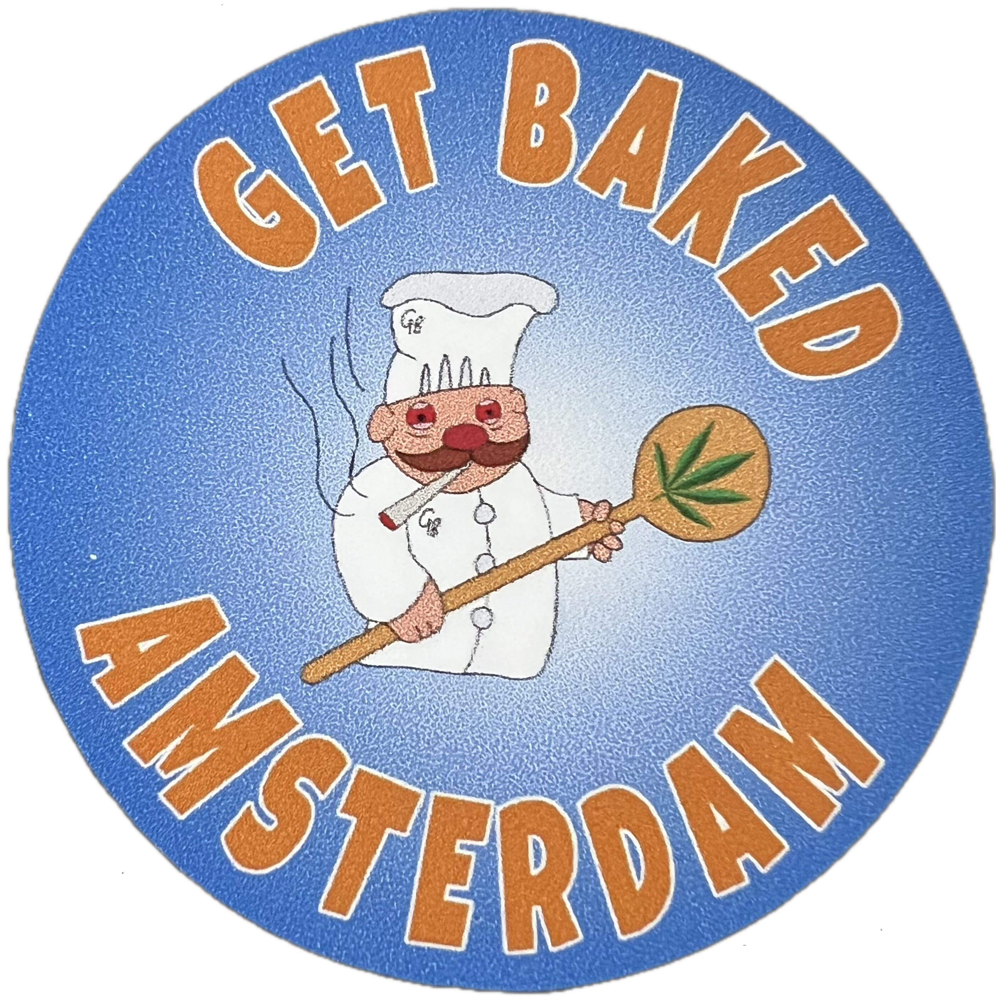

Edibles with a Purpose
Upon finishing the workshop, you will receive a Certificate of Completion in Cannabis Culinary Science as a testament to your participation in an educational program on infusion techniques, legal frameworks, and responsible cannabis consumption.
Amsterdam’s coffeeshops are famous worldwide, offering a legal place to buy and enjoy cannabis. But where does all this cannabis actually come from? The answer isn’t as simple as you might think.
The Netherlands has a policy of tolerance when it comes to cannabis, but there’s a major contradiction in the law:
Since coffeeshops aren’t allowed to legally purchase cannabis, where does it come from? The answer lies in a gray area where supply is technically illegal but widely ignored. This creates a system where growers, distributors, and coffeeshop owners operate in a hidden economy, managing risks while keeping Amsterdam’s cannabis culture thriving.
In our workshop, we take you behind the scenes of this unique system. We’ll cover:
By the end of the workshop, you won’t just walk away with infused treats—you’ll have a deeper understanding of how one of the most famous cannabis markets in the world actually works.
Meanwhile, we would love to educate you on the Netherlands in general, such as it’s history, culture and customs. As well as telling the story about its extraordinary relationship with cannabis.We find it of paramount importance to facilitate a safe, welcoming, and trustworthy environment for everyone who wants to participate. Even if you just would want to observe, and instead learn how to make normal brownies and gummies from scratch, you are very welcome to join.
We believe in connecting people from all backgrounds through this unique, educational experience. All ages and levels of experience are welcome—just let us know if you have any special dietary needs in advance, as we can substitute coconut-based ingredients if needed.
Last Updated: 19/02/2025
Get Baked Amsterdam operates as an educational culinary workshop focused on the history, chemistry, and legal framework of cannabis-infused cooking. We do not sell, supply, distribute, or provide cannabis, THC products, or any other controlled substances.
All participants must purchase their own cannabis ingredients separately from a licensed dispensary before attending our workshop. We do not facilitate or mediate any transactions related to cannabis sales.
This workshop is a theoretical and practical cooking class where attendees learn:
By attending, participants acknowledge that this is a culinary education course and not an event for the consumption, purchase, or sale of cannabis.
We encourage responsible, informed, and legal use of cannabis in line with Dutch policies and harm reduction principles.
Get Baked Amsterdam is not responsible for any legal, medical, or financial consequences resulting from:
Participants assume full responsibility for their choices regarding cannabis and understand that all discussions and demonstrations in this workshop are strictly educational.
By booking this workshop, participants acknowledge and accept the following:
For any legal concerns or questions about our compliance, please contact us at:
Email: getbakedamsterdam@gmail.com
Phone: +31613029143